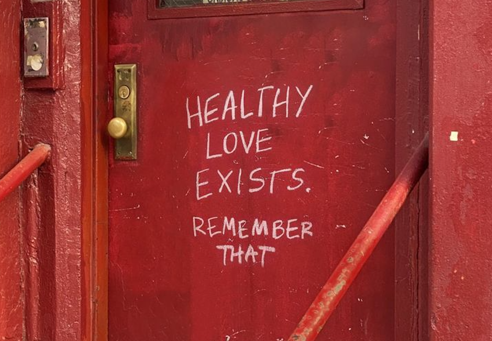

Explore your mind, identify red flags, and practice self-love. Click each button on the different pages to reveal insights, affirmations, and probably get clocked at some point. But don’t worry, this is a judgment-free zone, just some fun little self-reflection :)
